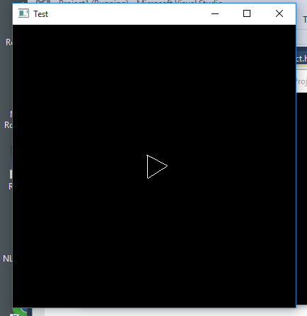

These instructions will walk you through testing a basic OpenGL project in the Linux Lab.
In the terminal window, create a new directory, then navigate to it.
mkdir gltest cd gltestNext, copy all of the files from
/home/cs241/uiTestinto the directory you created.cp /home/cs241/uiTest/* .Run the
makecommand, then runa.out.make a.out
If all goes well, you should see a window appear with a rotating shape, which can be controlled using your arrow keys.
